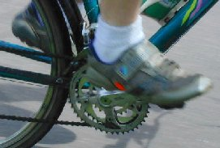

More bike articlesAll the information in this article comes from Chapter 5 "Optimum Pedaling Cadence," by J. Coast, in High-Tech Cycling (Edmund Burke, editor, Human Kinetics, 1996). This chapter summarizes various experiments done to determine the opimal cadence for cycling. They found that optimum cadence varied, depending both on how much power you are producing, and what you hope to maximize in your assessment of "optimal."
First, let's assume that "optimal" means "most efficient aerobically," i.e. least amount of oxygen consumed. They found that, generally, the more power you're putting out, the higher your cadence should be. The numbers run something like this: optimum cadence when you're dawdling along (producing 50W power output) is about 40 rpm, while optimum cadence for a real effort (300W output) is about 80 rpm.
Now let's say that "optimal" means "least stress on joint and muscles," i.e. your biggest problem is not aerobic capacity but how tired your muscles are getting and how much stress is being put on your knees and other joints. This is more a concern for endurance athletes, like in longer road races and Tour De France stages. When examined for this, the best cadence was in the order of 95 to 100 rpm (I think they were only considering high power outputs in these experiments).
Also, the lower gear provided by a high cadence means that acceleration is easy, so higher cadence is important in road races (when you have to be ready at all times to follow a break). Acceleration is largely irrelevant in time trials.
So this is why you see relatively low cadences in town cyclists (they're not putting out much energy), high cadences in road racers, and medium cadences in time trialers.